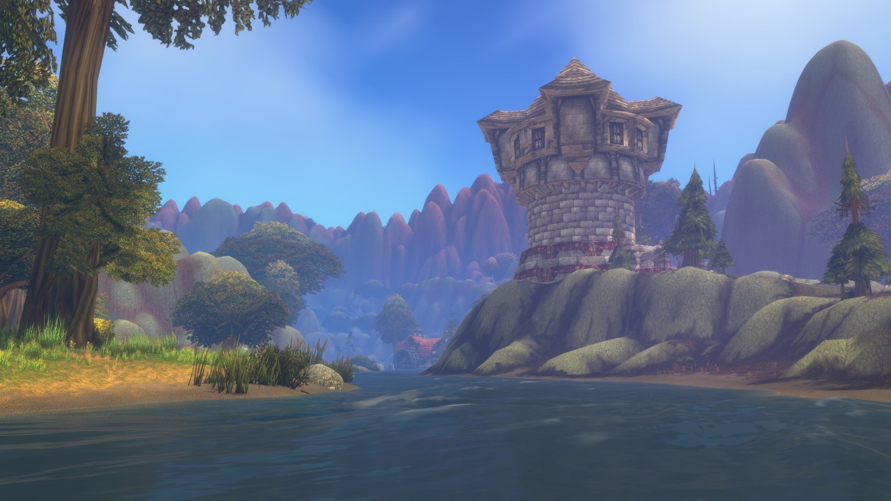
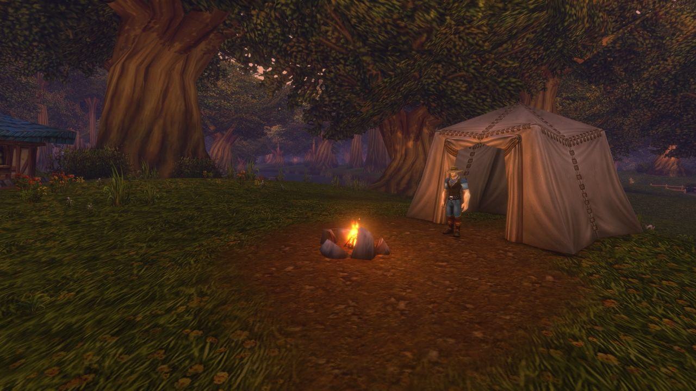

A Blizzard apresentou World of Warcraft: Forever como uma experiência permanente ao lado do WoW moderno e de Classic. A aventura volta aos continentes originais, com progressão até o nível 60 e histórias situadas antes de Molten Core, após Warcraft III Reforged: Forsaken Kingdom.
Lançamento, beta e assinatura
O lançamento global foi marcado para 4 de novembro de 2026, com beta em 17 de setembro. O acesso a Forever estará incluído na assinatura ou tempo de jogo de WoW. O comunicado alterna as siglas PDT e PST para o horário das 15h; por essa inconsistência, não fixamos aqui uma conversão para Brasília. Anúncio oficial ↗.
Novas regiões e atividades
O resumo da abertura da BlizzCon anuncia três zonas, mais de mil missões, nove masmorras e duas raides novas. Resumo da abertura ↗.
Hyjal, Shen’dralas e Riverglades ampliam a exploração; Zephras Isle introduz os Skyborne. As nove masmorras anunciadas são Hall of Thanes, Ruins of Lordaeron, a escavação acima de Whelgar’s Excavation, City of Dalaran, Blackmaw Hold, Drowned City, Krol’dok Stronghold, Alcaz Prison e Shaper’s Terrace.

Skyborne e a filosofia de Classic
Skyborne podem escolher Horda ou Aliança: xamã está associado à Horda, mago à Aliança; guerreiro, caçador, ladino e druida atendem às duas facções. O projeto mantém a jornada 1–60, sem montarias voadoras ou escalonamento de nível. Também anuncia controle por gamepad, opções visuais Classic/modernas e modelos HD/SD.
Camping, profissões e Legacy
Camping transforma fogueiras em encontros com utilidades e bônus. A fogueira básica aceita três objetos, um por participante, com recarga de uma hora. As profissões ganham mais de 600 receitas.
Legacy recompensa desafios e personagens alternativos. Os pontos são compartilhados, mas cada personagem escolhe seus talentos; no lançamento, poderá gastar 16 dos até 65 pontos disponíveis.

Servidores, aparência e combate
A estrutura “realmless” usa conjuntos de regras Normal, PvP e Roleplaying; Hardcore virá depois. Grupos não atravessam regras ou facções. Haverá nomes em duas partes e preferência de idioma.
Transmog é opcional. O combate preserva o ritmo tático de Classic, com revisão de equipamentos e talentos. As novas combinações incluem sacerdote gnomo, caçador humano, xamã anão, mago orc, bruxo troll e paladino morto-vivo. Paladinos recebem ferramentas como Holy Strike, Consecration básica e provocação ligada a Seal of Fury. Detalhes completos do Deep Dive ↗.
O que está nos pacotes opcionais?
Skyborne Heroic Pack: raça Skyborne e início em Zephras, reserva antecipada de nome, montaria, cosméticos e um código Invite-A-Friend.
Skyborne Epic Pack: conteúdo Heroic, acesso ao beta, 30 dias de jogo a partir do lançamento e três códigos no total, além de extras cosméticos.
Warcraft Forever Collection: conteúdo Epic, Warcraft III: Reforged, campanha Forsaken Kingdom e decoração para o WoW moderno.
A edição física de colecionador é vendida na Blizzard Gear Store enquanto houver estoque. Preços e condições regionais devem ser conferidos nas lojas oficiais.
O que vem depois?
As novas raides abrem em 9 de dezembro. O roteiro prevê outras raides, masmorras, PvP, conteúdo de mundo, missões, Hardcore e uma raide clássica reformulada, sem datas específicas para todos esses itens. Resumo do painel What’s Next ↗.